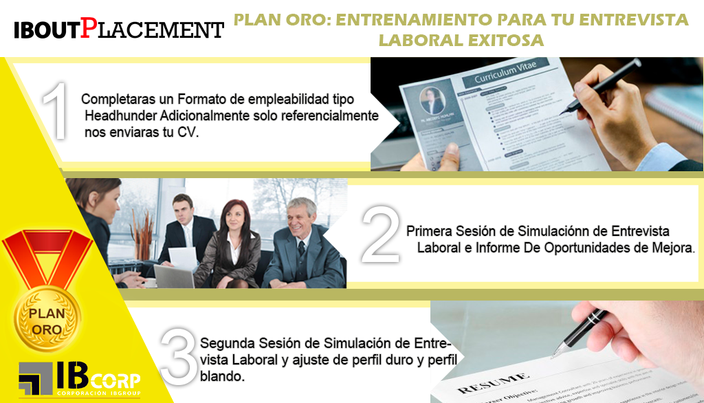
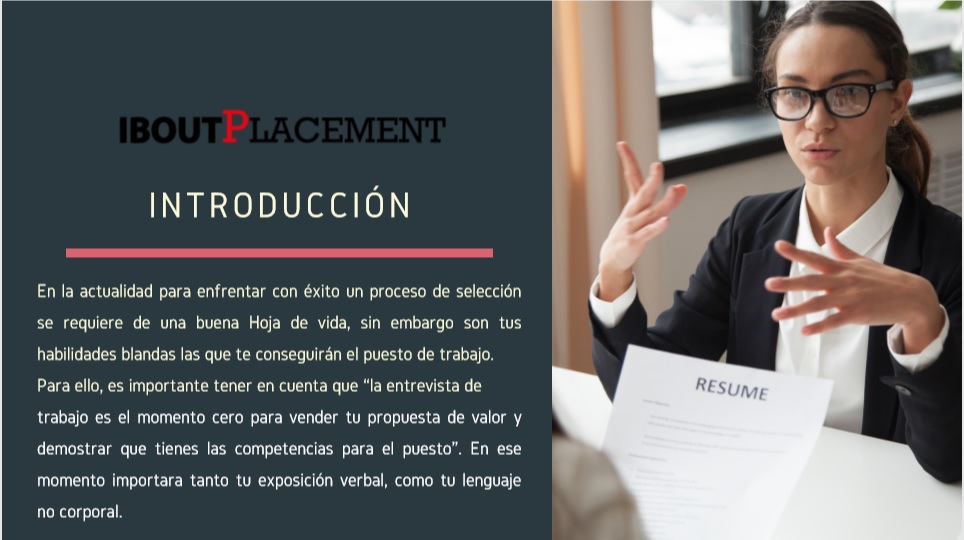

PLAN ORO: ENTRENAMIENTO PARA TU ENTREVISTA
LABORAL EXITOSA
Es imprescindible estar preparado para enfrentar con éxito un proceso de selección de personal. Una buena hoja de vida puede conseguirte la entrevista pero son tus habilidades blandas las que te conseguirán el puesto de trabajo. La entrevista de trabajo es el momento cero para vender tu propuesta de valor y demostrar que tienes las competencias para el puesto, importara tanto tu exposición verbal como tu lenguaje no corporal. Nosotros te haremos un juego de roles donde te expondrás a entrevistas guiadas por expertos nuestros reclutadores y te proporcionaremos oportunidades de mejoras que serán muy importantes para tu éxito en una entrevista laboral
PROCESO:


